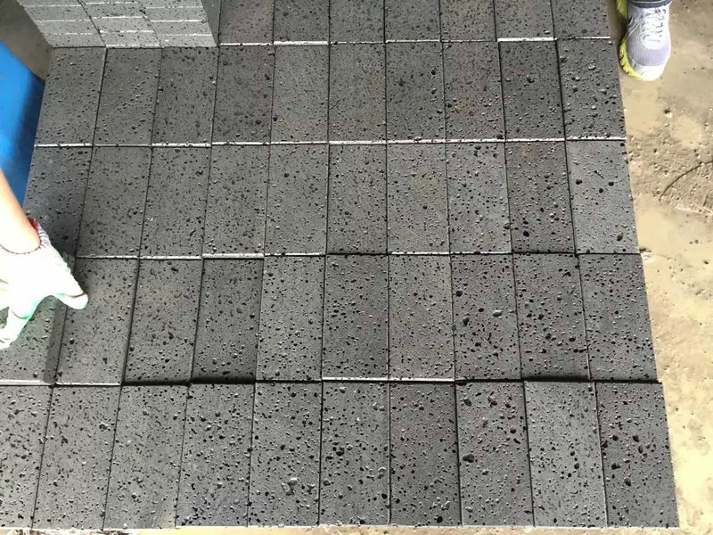
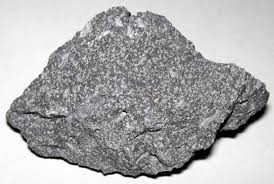
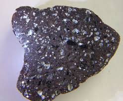
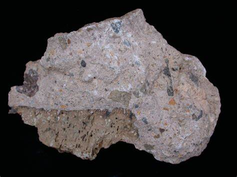

Andesite: The Fine-Grained Volcanic Rock
Chemical Formula: Primarily SiO₂ (Silicon Dioxide) with feldspar, pyroxene, and amphibole minerals
Color: Grey, Black, Brown, Green
Hardness: 5.5-6 on the Mohs scale
Crystal System: Aphanitic (extrusive igneous rock)
Localities: Andes Mountains (South America), Japan, Indonesia, United States (Pacific Northwest)
Common Uses: Construction material, road base aggregate, tiles, sculptures
Andesite is a fine-grained volcanic rock that forms through the rapid cooling of magma at or near the Earth's surface, typically in volcanic regions. It is an extrusive igneous rock, meaning it solidifies from molten lava expelled during volcanic eruptions. Andesite is named after the Andes Mountains in South America, where it is commonly found.
Andesite is intermediate in composition, containing minerals like plagioclase, pyroxene, and amphibole, which give it a range of colors from light to dark grey, black, brown, and green. Due to its hardness and durability, andesite is widely used in construction, road building, and decorative applications.
Formation and Types of Andesite
Andesite forms from magma that is intermediate in silica content (around 52-63%) and contains moderate amounts of iron, magnesium, and calcium. The rock is typically found in volcanic arcs associated with subduction zones, where an oceanic plate is forced beneath a continental plate. As the plate sinks and melts, magma is generated and erupts to form andesite.
Key Types of Andesite:
1. Porphyritic Andesite

This type of andesite contains larger visible crystals (phenocrysts) embedded in a fine-grained matrix. The phenocrysts are often made of plagioclase, amphibole, or pyroxene.
2. Hornblende Andesite

Rich in hornblende (a type of amphibole mineral), this variety has a darker color and is often used for construction and road material due to its strength.
3. Pyroxene Andesite

Dominated by pyroxene minerals, pyroxene andesite tends to be darker in color and is commonly found in volcanic regions.
4. Dacitic Andesite

With a higher silica content, dacitic andesite bridges the gap between andesite and dacite, making it slightly lighter in color and often associated with explosive volcanic activity.
5. Basaltic Andesite

This variety has a lower silica content and often forms from the partial melting of basaltic crust. It shares some characteristics with basalt but has a more intermediate composition.
Structure and Properties of Andesite
Andesite is characterized by its fine-grained texture and intermediate composition, which makes it distinct from more mafic rocks like basalt and more felsic rocks like rhyolite. The minerals in andesite crystallize rapidly as the lava cools, resulting in an aphanitic (fine-grained) texture, with larger phenocrysts sometimes present.
- Hardness: Andesite ranges from 5.5 to 6 on the Mohs scale, making it relatively durable and suitable for construction.
- Color: Andesite is typically grey, but can range from dark brown to black or even green depending on its mineral content.
- Porosity: Andesite is generally dense and non-porous, but volcanic andesite can sometimes have small vesicles (gas bubbles) trapped within the rock.
- Mineral Composition: Andesite contains plagioclase feldspar, pyroxene, and amphibole, with minor amounts of quartz and biotite. The presence of different minerals can give andesite a range of textures and colors.
Uses of Andesite
Andesite’s durability and aesthetic appeal make it suitable for a variety of industrial and decorative applications. Its resistance to weathering and physical wear makes it a preferred material in construction and infrastructure projects.
1. Construction Material
Andesite is widely used as a building material due to its strength and resistance to weathering. It is commonly used as aggregate in concrete, as well as in road construction.
- Road Base and Paving: Crushed andesite is used as a base material for roads and highways. Its durability helps create a stable foundation that can withstand heavy traffic and weather conditions.
- Building Stone: Andesite has been used in construction for centuries. It can be cut into blocks or slabs and used for walls, flooring, and facades in both residential and commercial buildings.
2. Decorative and Architectural Stone
Andesite’s attractive color and fine texture make it a popular choice for decorative applications, including tiles, sculptures, and architectural details.
- Tiles and Flooring: Andesite is often cut and polished into tiles for use in flooring, patios, and garden paths. Its non-slip surface and resistance to wear make it ideal for both indoor and outdoor use.
- Sculptures and Monuments: Due to its fine-grained texture, andesite can be intricately carved and polished, making it suitable for artistic purposes. Monuments, statues, and decorative garden pieces are often crafted from andesite.
3. Geological Research
Andesite plays a significant role in volcanic studies. Its formation provides insights into the processes occurring at subduction zones, helping geologists understand volcanic activity and tectonic processes.
- Volcanology: Andesite is frequently studied in the field of volcanology, as it is commonly associated with volcanic arcs and explosive eruptions. The study of andesite helps scientists predict volcanic behavior and understand the geologic history of volcanic regions.
Unusual Varieties of Andesite:
While most andesite forms under typical volcanic conditions, certain varieties stand out due to their unique characteristics or formation processes.
1. Vesicular Andesite
This variety contains vesicles, or small gas bubbles, that form during the cooling of the lava. Vesicular andesite often has a sponge-like texture and is used in decorative applications or as lightweight construction material.
2. Amygdaloidal Andesite
Amygdaloidal andesite contains vesicles that have been filled with secondary minerals such as calcite, quartz, or zeolite. These minerals create colorful, rounded inclusions within the rock, making it visually striking.
3. Pyroclastic Andesite
Formed during explosive volcanic eruptions, pyroclastic andesite consists of fragmented volcanic material. This variety is often associated with ash and pumice deposits.
Sourcing Locations of Andesite
Andesite is found in regions with active or historically active volcanoes, particularly along tectonic plate boundaries where subduction occurs. The most famous andesite deposits are located along the Pacific Ring of Fire, where volcanic activity is most pronounced.
- Andes Mountains (South America): The Andes Mountains, from which andesite gets its name, are rich in this volcanic rock, particularly around active volcanoes like Cotopaxi and Chimborazo in Ecuador.
- Japan: Japan's volcanic arcs, including Mount Fuji and Sakurajima, are home to extensive andesite formations, which are studied for their volcanic history.
- Indonesia: Indonesia, one of the most volcanically active regions in the world, produces large amounts of andesite, particularly from volcanoes like Mount Merapi and Mount Bromo.
- United States (Pacific Northwest): The Cascade Range, including Mount St. Helens and Mount Rainier, contains significant andesite deposits, often associated with explosive volcanic eruptions.
- New Zealand: The Taupo Volcanic Zone in New Zealand is rich in andesite, forming a significant part of the region’s volcanic landscape.
Exploration and Mining of Andesite
Andesite deposits are typically found near the surface in volcanic regions, making them accessible for quarrying. Mining andesite is a relatively straightforward process, involving surface excavation and quarrying.
Exploration
Geologists identify andesite deposits by studying volcanic regions, particularly around subduction zones. Satellite imagery and geological mapping help locate volcanic flows and andesite deposits.
Mining Methods
Andesite is typically mined using open-pit quarrying methods. Large blocks of the rock are extracted, crushed, and processed for use in construction or decorative applications.
- Extraction: Andesite is extracted from quarries using drilling, blasting, or cutting techniques, depending on the scale of the operation. Large blocks may be sawn or split into smaller slabs for transportation.
Processing
Once mined, andesite is processed into various forms, including crushed aggregate for road base, tiles for construction, and polished stone for decorative purposes. Depending on its final use, andesite may be cut, polished, or crushed to specific sizes.
Metaphysical Properties of Andesite
In addition to its industrial uses, andesite is sometimes valued for its metaphysical properties. It is associated with grounding energy, strength, and protection, reflecting its origins in volcanic processes.
- Grounding and Stability: Andesite is believed to help individuals stay grounded and stable during times of stress or change. It is thought to provide a calming influence and help balance emotions.
- Protection: Like many volcanic rocks, andesite is associated with protection, both physically and emotionally. It is believed to shield individuals from negative energies and provide strength during challenging situations.
- Personal Growth: Andesite is sometimes linked to personal growth and transformation, much like the metamorphic processes that shape volcanic landscapes. It is said to encourage resilience and adaptability.
Famous Finds and Andesite
Andesite plays a prominent role in the geology of some of the world's most famous volcanic landscapes. These formations provide important insights into the Earth's tectonic processes and have contributed to our understanding of volcanic activity.
- Mount St. Helens (United States): The 1980 eruption of Mount St. Helens produced large quantities of andesite. The volcanic deposits from this eruption have been extensively studied by geologists.
- Mount Fuji (Japan): Japan's iconic Mount Fuji is composed largely of andesite, which forms the distinctive slopes of the volcano. Andesite from Mount Fuji has been used in construction and sculpture.
- Cotopaxi (Ecuador): One of the world’s highest active volcanoes, Cotopaxi has produced significant andesite flows, which are studied to understand the volcanic processes that shape the Andes Mountains.
Caring for Andesite
While durable, andesite requires proper care, particularly when used in decorative or architectural applications. Regular cleaning and maintenance can help preserve its appearance and integrity.
- Cleaning: Clean andesite with a mild detergent and water. Avoid using harsh chemicals or acidic cleaners as they can erode the surface over time.
- Sealing: For outdoor applications, such as paving or garden paths, andesite should be sealed to protect it from moisture, staining, and weathering. This is particularly important in freeze-thaw climates where water infiltration can cause cracking.
- Handling: Andesite used in construction or decoration should be handled carefully to avoid chipping or scratching. Proper installation techniques can help ensure long-lasting durability.
Conclusion
Andesite is a versatile and durable volcanic rock that plays a significant role in both the natural world and human industries. Its formation at volcanic arcs makes it an important resource for geologists, while its strength and aesthetic qualities make it valuable in construction and design.